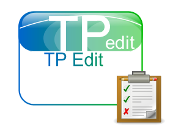

FOP und PDF-Formulare

Der Editor für Testprozeduren und Checklisten verfügte bereits seit längerer Zeit über eine Vielzahl von Features - allerdings mit dem Fokus auf Protokolle, die in Papierform erzeugt und ausgefüllt wurden. Das ändert sich gerade...

Im Editor für Testprozeduren und Checklisten existiert die Möglichkeit, schnell Testprozeduren zu erstellen. Der Anwender muss dazu keine umständliche Syntax oder Domain Specific Language erlernen. Testschritte werden einfach durch Leerzeilen voneinander getrennt.Testprozeduren können in verschiedenen Formaten exportiert werden - beispielsweise als DocBook oder - über den Umweg XSLT und FOP - als PDF. Darauf lag bei der Konzeption des Werkzeuges auch der Fokus: Testprozeduren werden erstellt um als Grundlage für ein Testprotokoll zu dienen, das archiviert wird und damit über einen langen Zeitraum einseh- und nachprüfbar bleibt.
Das bietet natürlich Angriffsfläche für radikale Naturschützer, die in jedem bedruckten Blatt Papier einen persönlichen Angriff sehen. Aber auch aus Anwendersicht kann es hin und wieder Sinn machen, wenn der gesamte Prozess papierlos abläuft. Eine naheliegende Möglichkeit ist die Benutzung von PDF-Formularen. Ein erster Versuch, Anwender dabei zu unterstützen, waren die Muttizettel. Allerdings musste sich der Anwender dabei wieder mit TeX auseinandersetzen - nicht jedermanns Geschmack!
Ich hatte daher schon längere Zeit vor, den Editor für Testprozeduren und Checklisten mit der Möglichkeit zu versehen, interaktive PDF-Formular-Komponenten zu integrieren, um damit Testprozeduren bzw. -Protokolle erzeugen zu können, die rein elektronisch ohne Medienbruch bearbeitet werden können.
Der Prozess der Umsetzung zog sich länger hin, als ich das geplant hatte: der von mir eingesetzte FO-Prozessor Apache FOP unterstützt die Integration von Formularen in das resultierende PDF-Dokument nämlich nicht. Man findet hin und wieder Leute im Netz, die ebenfalls nach dieser Funktionalität suchen, aber niemand war damit erfolgreich. Der einzige Hinweis, auf den ich stieß, war ein VB-Projekt, in dem iTextsharp benutzt wurde, um bestimmte Suchbegriffe in existierenden PDF-Dokumenten einzurahmen. Der Autor erklärte dazu, dass man damit ja die Integration von Formularen, bzw. Formularelementen realisieren könnte, indem man zunächst mittels FOP das PDF erstellt und dann in einem zweiten Durchlauf festgelegte Marker durch Formularelemente ersetzt.
Diese Idee klang vielversprechend - allerdings sank bei mir die Motivation - denn obwohl ich hin und wieder Code zwischen Programmiersprachen transponiere - der Abstand von VB.NET zu Java ist doch ganz schön groß. Jedoch - was lange währt...: nunmehr ist es vollbracht - es gibt den prototypischen Code, der noch festverdrahtet das Suchmuster "Group:" gegen zwei Radiobuttons ersetzt (tatsächlich wird jedes gefundene Muster durch ein weißes Rechteck überdeckt, auf das dann die RadioButtons platziert werden) Inspiriert wurde ich von einer weiteren frühen Version dieser Idee mittels .NET.
Angehängt ist hier das Ursprungsdokument zusammen mit der Version mit den Formularelementen.
Nun sind noch einige weitere Entscheidungen zu treffen:
- Wie sorgt man für die gewünschte Dimension des Elements (Man denke an zum Beispiel ein mehrzeiliges TextFeld für Freitexteingaben)
- Wie sorgt man für Radiobuttons bzw. OptionGroups
- ...

Artikel, die hierher verlinken
FOP und PDF-Formulare mittels iText
08.09.2016
Der Editor für Testprozeduren und Checklisten verfügte bereits seit längerer Zeit über eine Vielzahl von Features - allerdings mit dem Fokus auf Protokolle, die in Papierform erzeugt und ausgefüllt wurden. Das hat sich nun geändert...


Vor 5 Jahren hier im Blog
-
Multi-Agenten-Systeme in dWb+
31.12.2016
Ein Anwendungsszenario für dWb+, das bisher noch keine größere Beachtung gefunden hat - auch in der Dokumentation! - ist die Modellierung von Multi-Agenten-Systemen. Ich werde hier zunächst auf einige grundlegende Überlegungen dazu eingehen und später über erste Ergebnisse informieren
Weiterlesen...
Tags
Android Basteln C und C++ Chaos Datenbanken Docker dWb+ ESP Wifi Garten Geo Git(lab|hub) Go GUI Hardware Java Jupyter Komponenten Links Linux Markup Music Numerik PKI-X.509-CA Python QBrowser Rants Raspi Revisited Security Software-Test sQLshell TeleGrafana Verschiedenes Video Virtualisierung Windows Upcoming...
Neueste Artikel
-
CI/CD Pipelines für DocBook-Dokumentationen
Nachdem ich neulich die Handbücher für die Anwendungen dWb+ und EBCMS sowie für das Framework dmcc, das beispielsweise im Aviator und auch in dWb+ zum Einsatz kommt auf Gitlab veröffentlicht habe, habe ich entsprechende CI/CD Pipelines eingerichtet, die dafür sorgen, dass die aktualle Version der jeweiligen Handbücher immer als PDF und EPUB abgerufen werden kann.
Weiterlesen... -
ATTiny85 und Micronucleus Bootloader
Nachdem ich festgestellt habe, dass es auch mir möglich ist, ein einfaches Custom Keyboard selbst zu bauen und bereits mit dem Entwurf einer entsprechenden Schaltung begonnen hatte, wollte ich von der Bastellösung mit dem Digispark wegkommen
Weiterlesen... -
Mein Open Source Manifest
Im Zuge des großen Log4J-Problems ist ja viel - auch viel dämliches - im Zusammenhang mit OpenSource-Projekten und ihrem Stellenwert verzapft worden
Weiterlesen...
Manche nennen es Blog, manche Web-Seite - ich schreibe hier hin und wieder über meine Erlebnisse, Rückschläge und Erleuchtungen bei meinen Hobbies.
Wer daran teilhaben und eventuell sogar davon profitieren möchte, muß damit leben, daß ich hin und wieder kleine Ausflüge in Bereiche mache, die nichts mit IT, Administration oder Softwareentwicklung zu tun haben.
Ich wünsche allen Lesern viel Spaß und hin und wieder einen kleinen AHA!-Effekt...
PS: Meine öffentlichen GitHub-Repositories findet man hier.